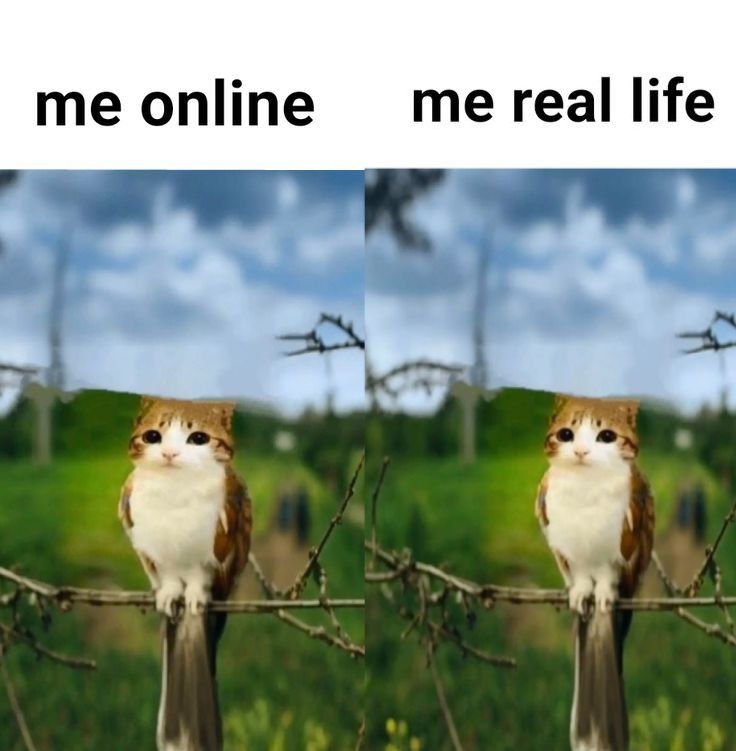
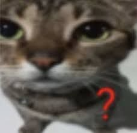
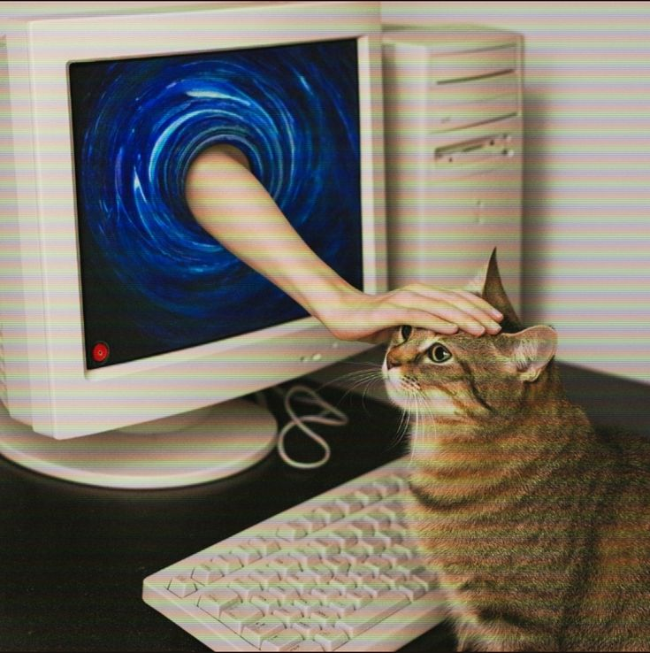
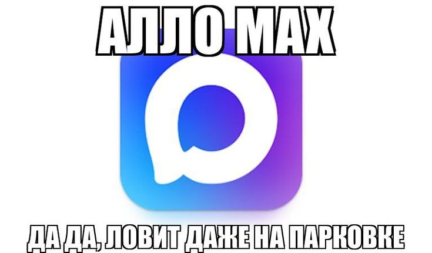

Интернет — это полезный инструмент, но он может быть опасным. На этом сайте ты узнаешь, как защитить свои данные, аккаунты и устройства от злоумышленников. Возможно вы узнаете что-то новое для себя или освежите память.
Перейти к разделам
Интернет полон полезной информации, но также есть и мошенники. Чтобы не стать их жертвой, соблюдай простые правила:
Так же используйте менеджеры паролей, они составляют сложный защифрованный пароль, такой пароль очень сложно взломать, и что бы не забыть его, менедж паролей сохраняет и шифрует его у себя на облаке, так что взломав менеджер паролей, злоумышленник не получит ваш пароль.
Подозрительные ссылки приходят в основном от неизвестных людей или тех кто вошли к вам в доверие.

Чтобы твои устройства оставались в безопасности, придерживайся правил:
Например вам отправили файл Minekraft.exe, нельзя его скачивать и запускать, проверьте файл через VirusTotal на наличие вирусов.
Обычного антивируса Windows Defender хватает сполна, но если хочется то лучше ставить Kaspersky(платную версию), а если нужен бесплатный для проверки на один раз то Dr.WebSecurity.
Если вписать «скачать робуксы без вирусов», то с шансом 100% вы установите вирус на своё устройство.
Социальные сети

Соцсети — это удобное общение, но они могут стать источником угроз:
Если кто-то захочет узнать про вам информацию, зная простой номер телефона, можно узнать где ты проживаешь, данные паспорта, сайты где зарегестрирован.
Всем верить в интернете нельзя